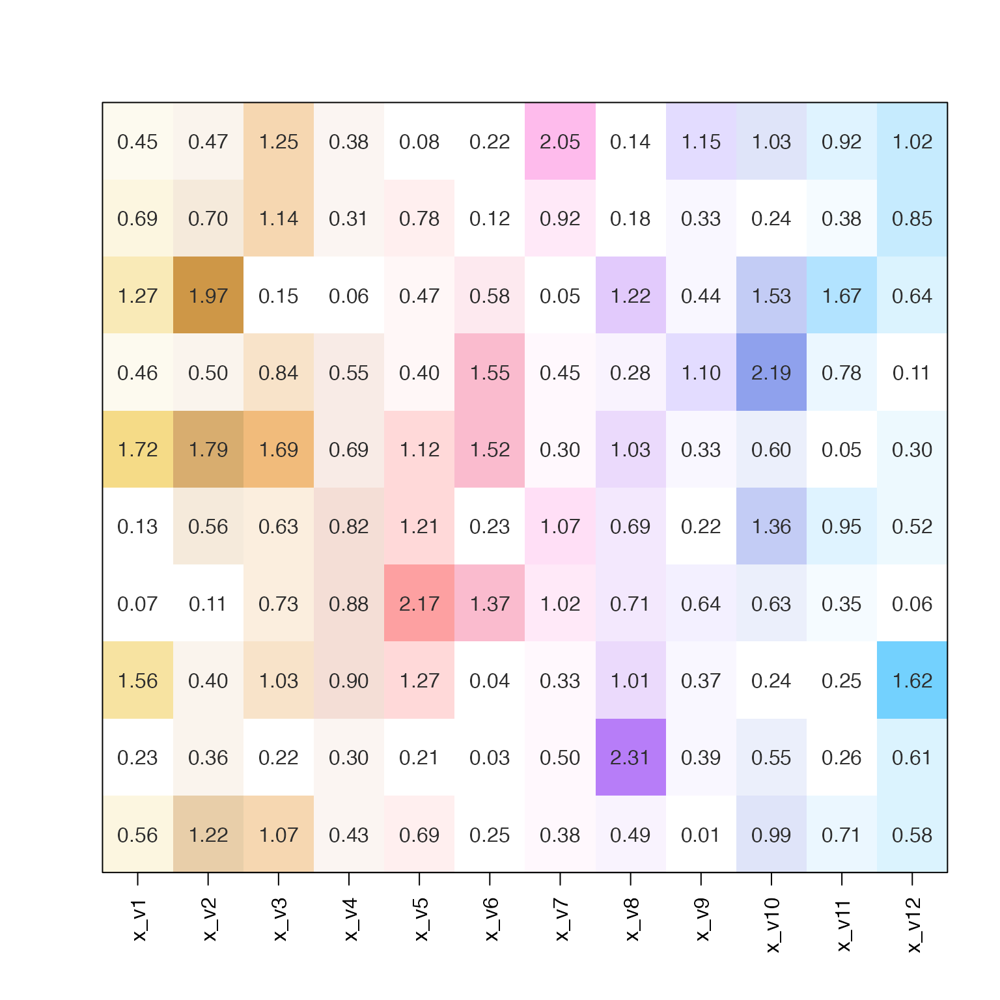

Convert numeric matrix to heatmap colors
matrix2heatColors(
x,
colorV = group2colors(colnames(x)),
defaultBaseColor = "#FFFFFF",
transformFunc = c,
lens = 0,
shareLimit = TRUE,
numLimitFactor = 0.95,
numLimit = NULL,
baseline = 0,
color_below_baseline = "#FFFFFF",
divergent = FALSE,
rampN = 15,
trimRamp = c(0, 0),
verbose = FALSE,
...
)numeric matrix. If there are no colnames(x) they will
be created using jamba::makeNames(rep("x", ncol(x))).
character vector of R colors, named by colnames(x),
and recycled to ncol(x) if needed. If colorV is supplied as
a list, the list elements are mapped to colnames(x) in order.
character vector of R colors used as the default
base color, when colorV is supplied as a vector.
function applied to numeric values before
the color gradient is mapped to numeric values. For example,
transformFunc=function(i)-log10(i) would map colors to P-value
using a -log10(p) transformation.
numeric value passed to warpRamp() to adjust the
distribution of colors along the numeric range.
logical indicating whether one numeric limit numLimit
should be used to define the numeric range for color mapping.
when numLimit is NULL, this factor is applied to
the maximum numeric value to determine the numLimit.
numeric value to define the maximum numeric value
above which all numeric values are mapped to the maximum color.
When set to NULL the numLimitFactor is used to define
the numLimit.
numeric value to define the numeric baseline, used
when divergent=FALSE. Values are recycled to ncol(x) to be
applied to each column individually.
color used when numeric value is
below the baseline. Values are recycled to ncol(x) to be
applied to each column individually. When color_below_baseline
is NULL, the first color in the color ramp is used for all
values below the baseline.
logical indicating whether to apply colors to the numeric range symmetric around zero.
integer value to define the number of color breaks for each color gradient.
numeric vector with two values, used by
jamba::getColorRamp() to trim the intermediate color gradient before
creating the final color ramp with length rampN. For example,
by default jamba::getColorRamp() creates a color gradient with
15 colorr, defined by argument gradientN=15, so the argument
trimRamp=c(4,2) will trim the first 4 colors and the last 2 colors
from the 15-color gradient, before generating the final color
gradient with length rampN. The trimRamp argument is especially
useful to remove the leading white color, or to trim the first
few colors to ensure the first color in the gradient is visibly
different from the background color defined by defaultBaseColor.
logical indicating whether to print verbose output.
additional arguments are passed to jamba::getColorRamp()
for additional customization. These arguments are handled across
all columns, and not a column-by-column basis.
This function is intended as a rapid way of applying a color
gradient to columns of numeric values, where each column
has its own base color. It calls jamba::getColorRamp()
for each column, and when supplied with one color, it
creates a color gradient from "grey95" to the output
of jamba::color2gradient().
When lens is non-zero, the color gradient is warped in order
to intensify the color saturation across the numeric range.
Other colorjam assignment:
col_div_xf(),
col_linear_xf(),
group2colors(),
rainbowJamMulti(),
vals2colorLevels()
set.seed(123);
# generate a random numeric matrix
m1 <- matrix(ncol=12, rnorm(120));
m1n <- m1;
m1n[] <- format(round(abs(m1), digits=2), trim=TRUE);
jamba::imageByColors(
matrix2heatColors(abs(m1),
transformFunc=c,
divergent=FALSE,
lens=-5,
shareNumLimit=TRUE,
baseline=0,
numLimit=4),
cellnote=m1n);
